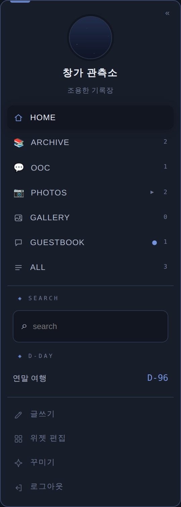
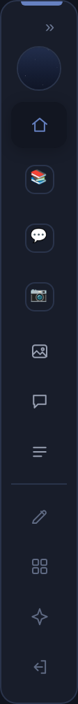

러브로그 · 위젯
☰ 메뉴 위젯
카테고리를 상단 줄 대신 세로 목록으로 모아 보여주는 위젯입니다. 위젯 추가 목록 맨 위에 있으며, 홈당 하나만 둘 수 있습니다.
목록 구성

사진 자리img/ll-w-menu.png홈·카테고리·갤러리·방명록·전체가 탭 순서대로 들어가고, 글 수 숫자와 새 방명록 표시도 함께 나옵니다. 사진첩 카테고리는 ▸를 누르면 폴더 목록이 펼쳐지고, 폴더를 누르면 바로 열립니다.
홈 주인에게는 글쓰기·위젯 편집·꾸미기·로그아웃 줄이 함께 보이며, 방문자에게는 보이지 않습니다. 메뉴 안에 담은 위젯(그림의 검색·디데이)은 카테고리 목록 아래에 카드 없이 쌓입니다.
메뉴 안에 넣기
검색·프로필·링크 목록·이웃 홈·디데이·방문자수·고정글·공지·BGM·최신글 위젯은 각 위젯 ✎의 「메뉴 안에 넣기」를 켜면 카드 없이 메뉴 안으로 들어옵니다. 순서는 위젯 목록의 순서를 따르고, 끄면 원래 자리로 돌아갑니다.
꾸미기 옵션
- 글 수 숫자 · 선 아이콘 · 제목 줄 숨김 · 담은 위젯을 카테고리 위로.
- 항목 기호 — 카테고리마다 이모지나 문자를 넣으면 펼친 목록의 아이콘 자리와 접힌 레일에 그 기호가 뜹니다. 비우면 기본(아이콘 · 접으면 앞 글자).
- 선택 표시 — 지금 보고 있는 항목의 강조 모양을 밝은 카드(기본) · 채움 알약(포인트색) · 왼쪽 선 중에서 고릅니다.
- 위에 프로필 사진·이름 — 어느 헤더에서든 메뉴 맨 위에 원형 사진과 이름·설명을 올립니다. 사진은 선택(없으면 이름만)이며, 확대·양옆·위아래 슬라이더와 미리보기로 보이는 부분을 맞춥니다. 이름·설명을 직접 쓰거나 비워서 홈 이름·부제를 따르게 할 수 있습니다.
- 주인 메뉴 켜고 끄기 · 오른쪽 아래 버튼 3개 숨기기 · 위쪽 카테고리 줄 숨기기 · 스크롤 따라오기(메뉴와 그 아래 위젯이 화면을 따라오되, 화면보다 길면 따라오지 않습니다).
« 접기 — 아이콘 레일

사진 자리img/ll-w-menu-rail.png메뉴 오른쪽 위 «를 누르면 폭 56px 아이콘 레일로 접힙니다. 홈·갤러리·방명록·전체는 아이콘으로, 일반 카테고리는 이름 앞 글자(또는 지정한 기호)로 표시되고, 프로필 사진은 작은 원으로 남습니다.
그 칸에 메뉴만 있다면 칸도 함께 좁아져 가운데가 넓어집니다. 다른 위젯이 같은 칸에 있으면 레일만 좁아집니다. »로 다시 펼치며, 접힘은 저장되지 않는 보기 상태라 새로고침하면 펼쳐진 채로 시작합니다.
헤더별 동작 · 띄우기 · 폰
- 가로 헤더 — 독립 카드로 섭니다.
- 사이드 프로필형 — 「사진 카드에 붙이기」를 켜면 사진 카드 아래로 한 판으로 이어집니다.
- 세로 칼럼 — 기둥 칸에는 위젯이 들어가지 않으므로 메뉴도 가운데·반대쪽 칸에 놓입니다.
- 📌 띄우기 — 칸에서 떼어 화면 어디든 둘 수 있습니다(PC 전용). 「띄웠을 때 펼침 방향」에서 「왼쪽으로(오른쪽 모서리 고정)」를 고르면 화면 오른쪽 구석에 두고 접었다 펴도 밖으로 나가지 않습니다.
- 폰 — 왼쪽 위 ☰ 버튼으로 서랍처럼 열리고, 항목을 누르면 이동하면서 닫힙니다.